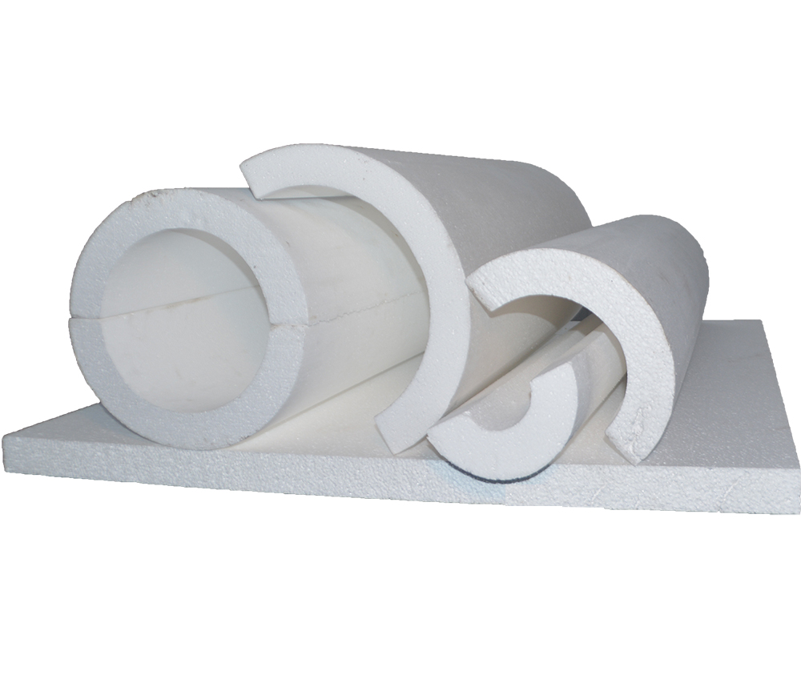

Poliestireno (EPS)

La base del Poliestireno es el estireno, un liquido cuyas moléculas se polimerizan, dando origen a
las macromoléculas de poliestireno. El estireno se mezcla íntimamente con agua y un agente de
expansión (el hidrocarburo pentano C5H12).
Poliestireno expandido de alta densidad (EPS) también conocido como TELGOPOR. Este material plástico
es muy conocido en la industria de la construcción por su utilización como material aislante debido
a sus excelentes propiedades y a las siguientes ventajas:
- Poco peso: contiene hasta un 98,5% de su volumen en aire. Por consiguiente, la densidad de la espuma es muy baja (pudiendo variar sus densidades desde 15 hasta 30 Kg./m3).
- Células cerradas: 1 cm3 de espuma de poliestireno expandido contiene de 3 a 6 millones de celdillas, llenas de aire.
- Estanqueidad: por estar sus células cerradas, el poliestireno expandido absorbe solo cantidades minúsculas de agua. No acusa capilaridad alguna.
- Bajo coeficiente de conductividad térmica: el aire en reposo dentro de las celdillas cerradas es muy mal conductor de calor.
- Buena resistencia mecánica y ausencia de fragilidad ante tensiones hendientes.
- Buena elasticidad: la capacidad de amortiguación de los distintos tipos de poliestireno expandido están en el límite superior dado por las leyes físicas que rigen los materiales aislantes.
- Resistencia al envejecimiento
- Resistencia a hongos y parásitos: el poliestireno expandido no es substrato nutritivo para parásitos, hongos o bacterias de putrefacción, ni es alimento de roedores o insectos.
- Amplio espectro térmico.
- Difícil inflamabilidad: llamado auto extinguible y de muy baja propagación de llamas.
- Rigidez dinámica: se le exige una resistencia a la compresión que le impide deformarse en exceso, una buena elasticidad, o sea una rigidez dinámica baja.
- Estabilidad dimensional: según la Norma DIN 18164 se establece una tolerancia de aproximadamente 0,5% como máximo, en las dimensiones de largo y ancho. La retracción del producto, después de un año a contar desde su fabricación, es insignificante.
Las Placas se utilizan para la aislación para superficies planas. De acuerdo a la temperatura a aislar, se utilizara el espesor correspondiente.
- Dimensiones: 990mm x 990mm
- Espesores: desde 10mm hasta 300mm
- Densidad: 20kg/m3
Son placas cortadas en tiras para realizar trabajos específicos, de grandes diámetros.
Utilizados para aislar tuberías de bajas temperaturas.
- Densidad: 20kg/m3.
- Espesor: hasta 6’’ en una capa o dos capas.
- Dimensiones: desde ½’’ hasta 10’’ de diámetro.
- FALTA TABLA
Medias cañas cortados en partes para una aislación de tuberías de diámetros mayores.